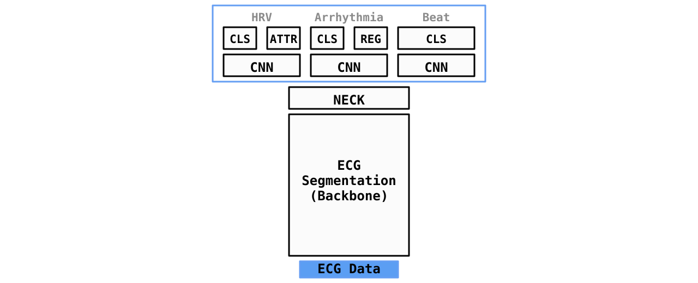

Documentation: https://ambiqai.github.io/heartkit
Source Code: https://github.com/AmbiqAI/heartkit
HeartKit is an optimized open-source TinyML model purpose-built to enable running a variety of real-time heart-monitoring applications on battery-powered, edge devices. By leveraging a modern multi-head network architecture coupled with Ambiq's ultra low-power SoC, the model is designed to be efficient, explainable, and extensible.
The architecture consists of an ECG segmentation model followed by three upstream heads: HRV head, arrhythmia head, and beat head. The ECG segmentation model serves as the backbone and is used to annotate every sample as either P-wave, QRS, T-wave, or none. The arrhythmia head is used to detect the presence of Atrial Fibrillation (AFIB) or Atrial Flutter (AFL). The HRV head is used to calculate heart rate, rhythm (e.g., bradycardia), and heart rate variability from the R peaks. Lastly, the beat head is used to identify individual irregular beats (PAC, PVC).
Key Features:
- Efficient: Novel architecture coupled w/ Ambiq's ultra low-power SoCs enable extreme energy efficiency.
- Explainable: Inference results are paired with metrics to provide explainable insights.
- Extensible: Add or remove heads for desired end application.
Requirements
The following are also required to compile/flash the binary for the EVB demo:
Note
A VSCode Dev Container is also available and defined in ./.devcontainer.
Installation
Usage
HeartKit can be used as either a CLI-based app or as a python package to perform advanced experimentation. In both forms, HeartKit exposes a number of modes and tasks discussed below. Refer to the Overview Guide to learn more about available options and configurations.
Modes
download: Download datasetstrain: Train a model for specified task and dataset(s)evaluate: Evaluate a model for specified task and dataset(s)export: Export a trained model to TensorFlow Lite and TFLMdemo: Run full demo on PC or EVB
Tasks
Segmentation: Perform ECG based segmentation (P-Wave, QRS, T-Wave)HRV: Heart rate, rhythm, HRV metrics (RR interval)Arrhythmia: Heart arrhythmia detection (AFIB, AFL)Beat: Classify individual beats (NORM, PAC, PVC, NOISE)
Architecture
HeartKit leverages a multi-head network- a backbone segmentation model followed by 3 uptream heads:
- Segmentation backbone utilizes a custom 1-D UNET architecture to perform ECG segmentation.
- HRV head utilizes segmentation results to derive a number of useful metrics including heart rate, rhythm and RR interval.
- Arrhythmia head utilizes a 1-D MBConv CNN to detect arrhythmias include AFIB and AFL.
- Beat-level head utilizes a 1-D MBConv CNN to detect irregular individual beats (PAC, PVC).

Refer to Architecture Overview for additional details on the model design.
Datasets
HeartKit leverages several open-source datasets for training each of the HeartKit models. Additionally, HeartKit contains a customizable synthetic 12-lead ECG generator. Check out the Datasets Guide to learn more about the datasets used along with their corresponding licenses and limitations.
Results
The following table provides the latest performance and accuracy results of all models when running on Apollo4 Plus EVB. Additional result details can be found in Results Section.
| Task | Params | FLOPS | Metric | Cycles/Inf | Time/Inf |
|---|---|---|---|---|---|
| Segmentation | 33K | 6.5M | 87.0% IOU | 531ms | 102M |
| Arrhythmia | 50K | 3.6M | 99.0% F1 | 465ms | 89M |
| Beat | 73K | 2.2M | 91.5% F1 | 241ms | 46M |
References
- ECG Heartbeat classification using deep transfer learning with Convolutional Neural Network and STFT technique
- Classification of ECG based on Hybrid Features using CNNs for Wearable Applications
- ECG Heartbeat classification using deep transfer learning with Convolutional Neural Network and STFT technique
- U2-Net: Going Deeper with Nested U-Structure for Salient Object Detection
- UNET 3+: A FULL-SCALE CONNECTED UNET FOR MEDICAL IMAGE SEGMENTATION
- ResUNet-a: a deep learning framework for semantic segmentation of remotely sensed data